Screenshots
The whole app, one screen at a time.
Click a picture to see it full size; the arrow keys move between them.

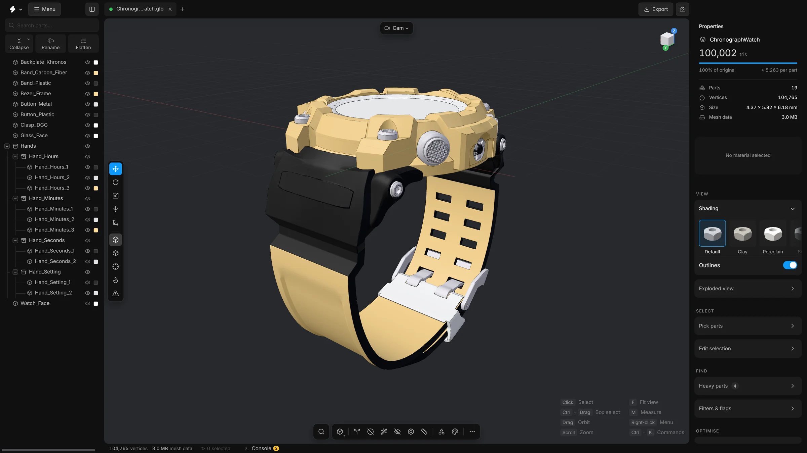


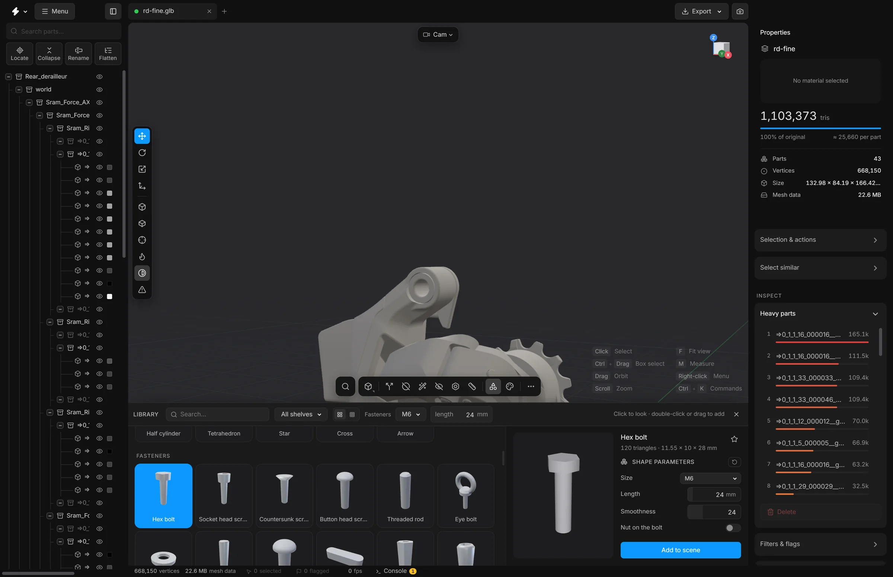


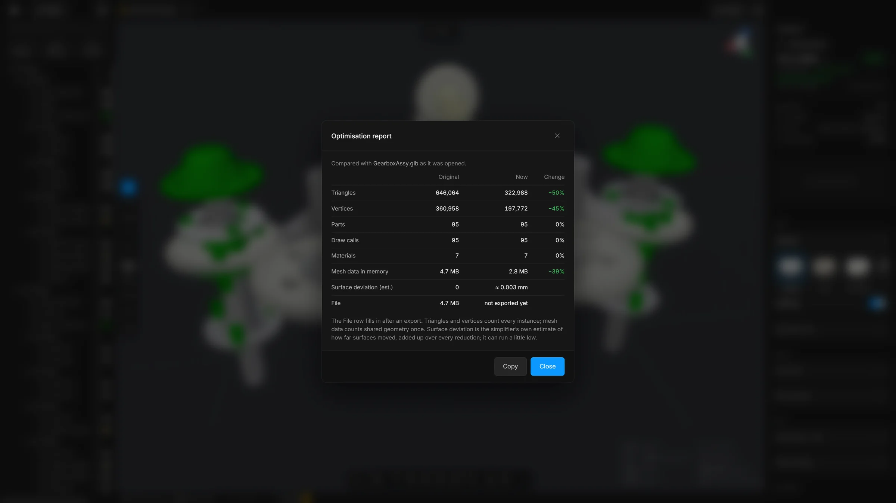

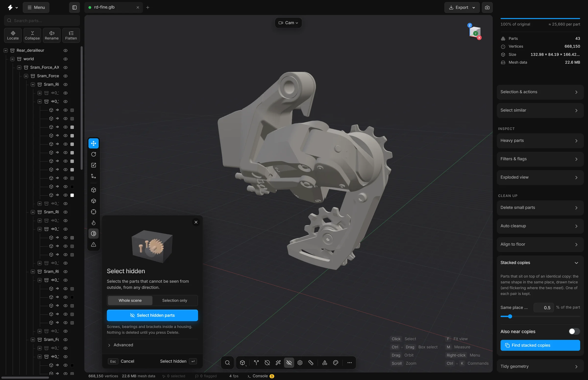

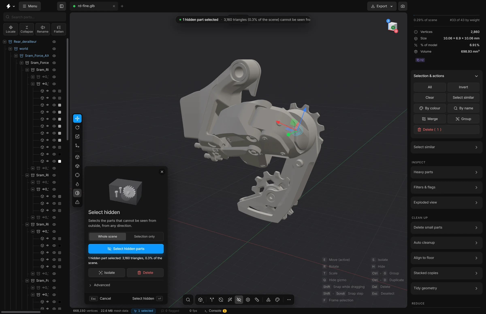

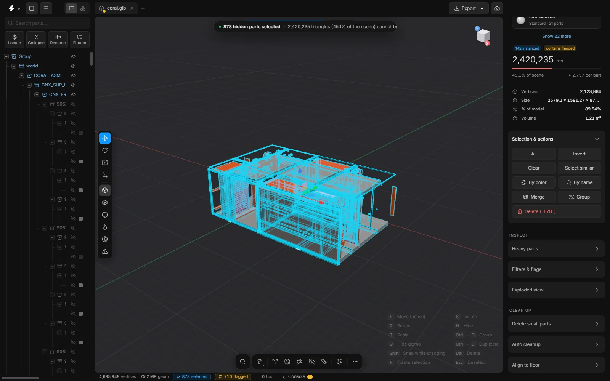


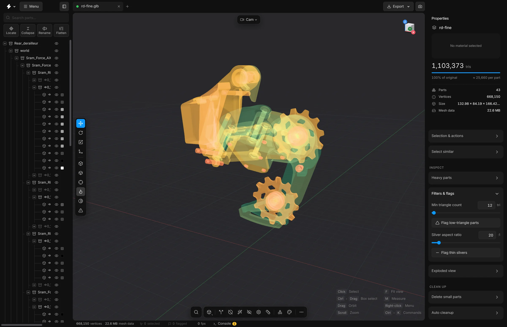


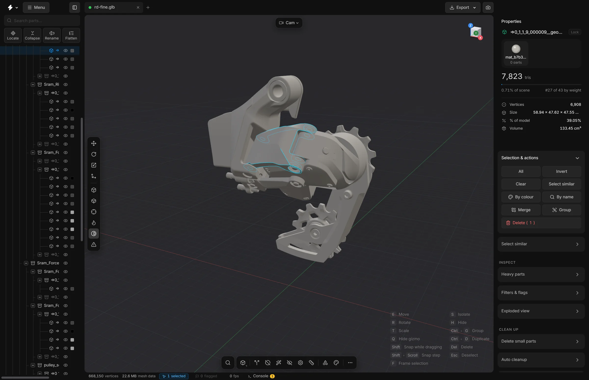

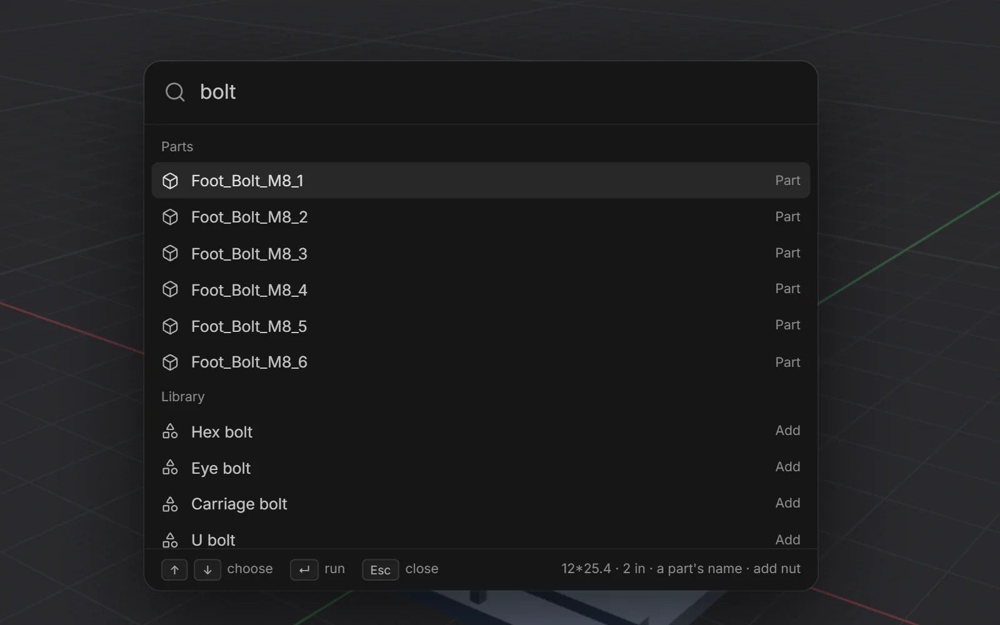

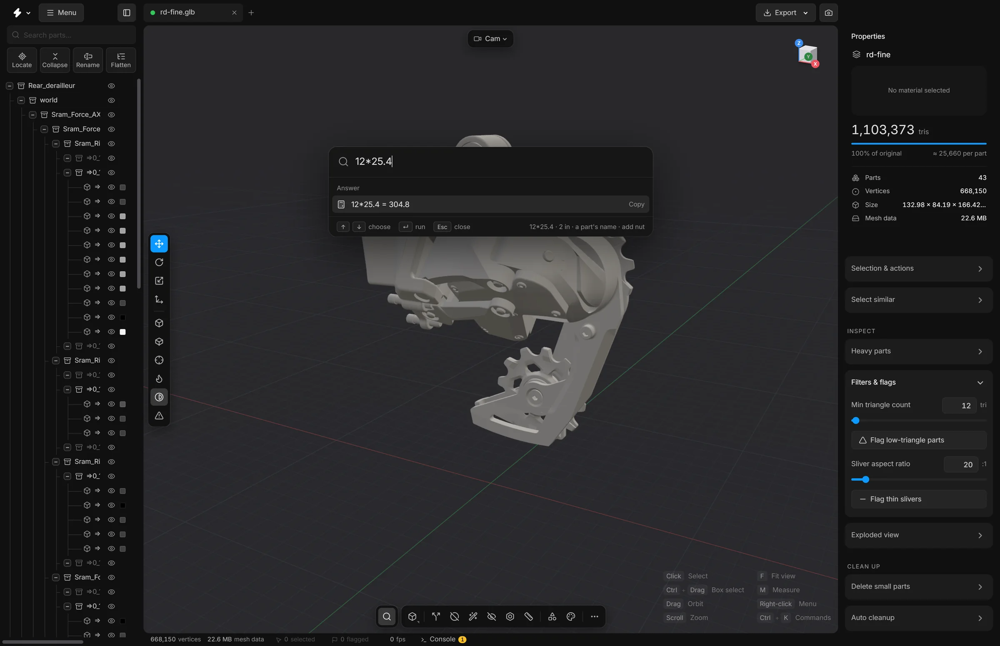


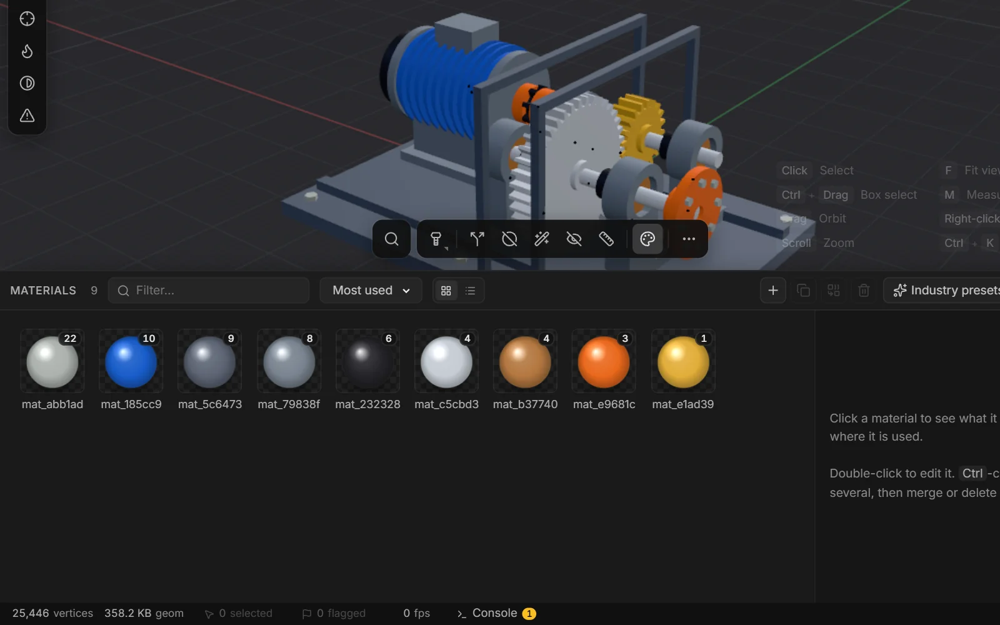

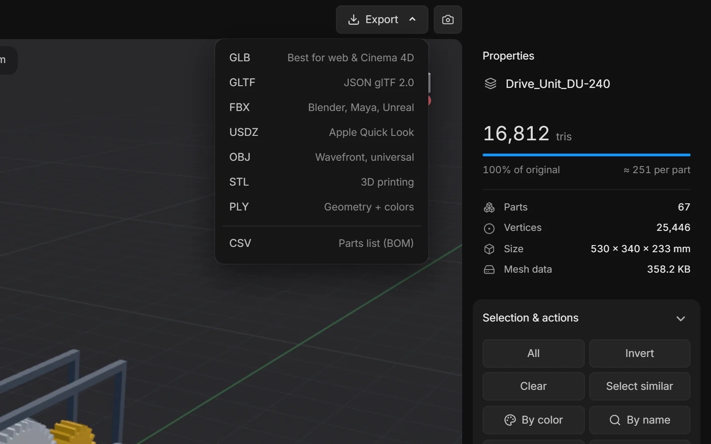


Run it on your own machine.
Free and open source under the MIT licence. Windows and macOS; your files never leave the computer.